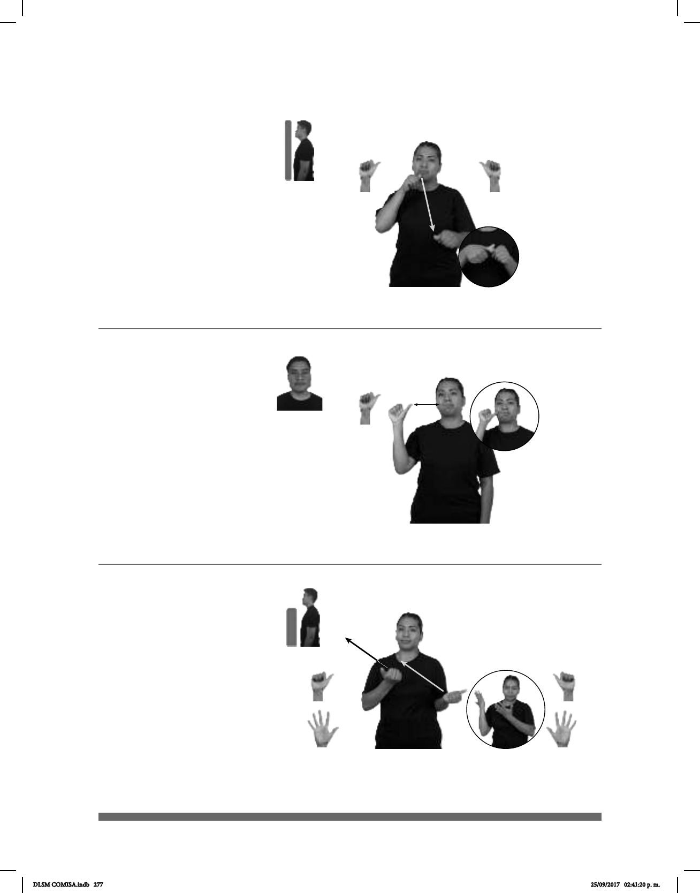

277
Seña: SB
MD y MB A.4
MD la palma inicia
oblicua hacia la izquierda y hacia
abajo y termina hacia abajo. MB
palma hacia la derecha.
MD de la boca al
pulgar de MB. MB a la altura del
pecho.
MD recto.
sust. f. Cada uno de los
alfabeto de un idioma.
Seña: SM
A.4
Palma hacia afuera.
Sobre la mejilla.
La mano simula dos
saltos.
sust. f. Cada una de las
piezas circulares de hule sobre la cual
se apoya y se desplaza la mayoría de
los vehículos; va montada sobre la
a presión.
(A-133)
(A-134)
FÁCIL APRENDER LETRA ABECEDARIO
Es fácil aprender las letras del abecedario.
LLANTA COCHE pro-TÚ DEBER CAMBIAR
Debes cambiar la llanta del coche.
Seña: SB
Seña que pasa de A.1
a 5.1
MD y MB palmas hacia
arriba.
MD y MB a la altura del
pecho.
MD y MB
recto hacia arriba y hacia la derecha
simultáneamente.
v. tr. Pasar a una persona
o una cosa del lugar en que uno está a
otro; mover algo una cosa consigo.
(A-135)
YA LLEVAR pos-TUYO ROPA
Llévate tu ropa ya.
DLSM COMISA.indb 277 25/09/2017 02:41:20 p. m.